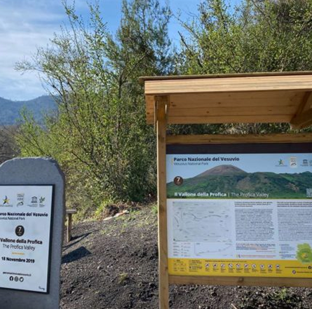

Benvenuti nella sezione dedicata alle attività nei parchi naturali: un invito a vivere esperienze autentiche e sostenibili immersi nella bellezza incontaminata della natura. Che siate appassionati di escursionismo, amanti delle due ruote, esploratori subacquei o semplicemente in cerca di relax, qui troverete proposte per ogni età e livello di esperienza.
Dai sentieri panoramici alle degustazioni di prodotti locali, dalle avventure in canoa alle passeggiate a cavallo, ogni attività è pensata per farvi scoprire il territorio in modo rispettoso e coinvolgente. Lasciatevi ispirare e preparatevi a vivere il parco da protagonisti.

Attività Parco dell'Etna
Attività Parco Naz. del Vesuvio
Attività Parco Naz. Sila

Attività Parco Arcip. Toscano